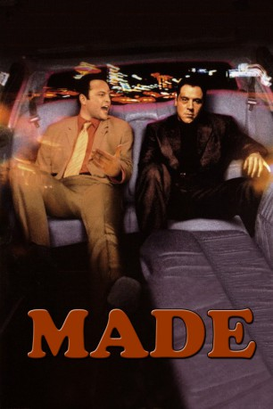
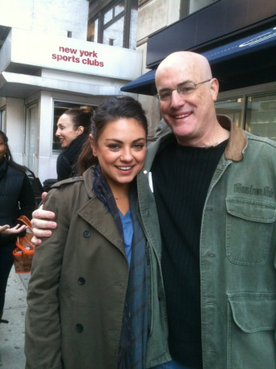

#3399 Made
 
 IMDB-Wertung: 6.4 / 10
IMDB-Wertung: 6.4 / 10  Metascore: 62
Metascore: 62 
Bobby ist Boxer und beschützt seine Freundin, die Stripperin Jess, während Ricky von einem Verbrecherleben ohne Geldsorgen träumt. Der Traum scheint sich zu erfüllen, als plötzlich ein Gangsterboss auftaucht und den beiden einen dubiosen Job in New York anbietet. Die beiden hoffen auf den großen Durchbruch und machen sich auf den Weg nach "Big Apple". Dort angekommen geraten die Freunde zwischen die Fronten von irischen und walisischen Verbrecherbanden und merken schnell, wie hart und brutal das Leben als Gangster wirklich ist. Innerhalb von Stunden platzen Bobbys und Ricks Träume von Stretch-Limos und noblen Nachtclubs. Stattdessen müssen Sie alles riskieren, um lebendig wieder aus New York rauszukommen...
Jahr: 2001
Dauer: 94 Minuten
FSK: 12
Land: USA Studio: Artisan EntertainmentTonspuren: DTS - ,
Untertitel:
Auflösung: 720p (1280x720) Größe: 4761 MB
Genre: Thriller, Drama, Komödie, Krimi
Regisseur:  Jon Favreau
Jon Favreau
Drehbuch: Jon Favreau
Soundtrack: John O'Brien, Lyle Workman
Darsteller:
 Jon Favreau als Bobby
Jon Favreau als Bobby Vince Vaughn als Ricky
Vince Vaughn als Ricky Famke Janssen als Jessica
Famke Janssen als Jessica Makenzie Vega als Chloe
Makenzie Vega als Chloe- Tom Morello als Best Man
 Jonathan Silverman als Bachelor
Jonathan Silverman als Bachelor Faizon Love als Horrace
Faizon Love als Horrace Peter Falk als Max
Peter Falk als Max Vernon Vaughn als Coach
Vernon Vaughn als Coach- Jennifer Bransford als Flight Attendant
 Vincent Pastore als Jimmy
Vincent Pastore als Jimmy Sean Combs als Ruiz
Sean Combs als Ruiz Leonardo Cimino als Leo
Leonardo Cimino als Leo- Federico Castelluccio als Doorman
 David O'Hara als The Welshman
David O'Hara als The Welshman Jamie Harris als Rogue
Jamie Harris als Rogue- Guy Washburn als Chuck E. Cheese
 Bud Cort als Interior Decorator , uncredited
Bud Cort als Interior Decorator , uncredited- Drea de Matteo als Club Girl , uncredited
- Dustin Diamond als Himself , uncredited
 Brian Donahue als Westie , uncredited
Brian Donahue als Westie , uncredited Jennifer Esposito als Club Girl , uncredited
Jennifer Esposito als Club Girl , uncredited- Grandmaster Flash als The Spa DJ , uncredited
 Sam Rockwell als Hotel Clerk , uncredited
Sam Rockwell als Hotel Clerk , uncredited Brian Smyj als Irish Thug , uncredited
Brian Smyj als Irish Thug , uncredited- Joe Goossen als Referee
- Jenteal als Wendy
- Kimberley Davies als Bartender
- Elizabeth Barondes als Wife
- Gary Auerbach als Husband
- Bill Capizzi als Arthur
- Esta-Joy Peters als Salesperson
- Jason Delgado als Man on Phone
- Matt O'Dwyer als Doorman #2
- Jason Fabini als Doorman #3
- Joan Favreau als Zoo Lady
-  Tim Gallin als Thug
- Michael Arturo als Agent at Bachelor Party , uncredited
 Sergine Dumais als Jessica , uncredited
Sergine Dumais als Jessica , uncredited- Jill Nicolini als Feature , uncredited
- Bruce Smolanoff als Irish Bar Thug , uncredited
Datei: X:\2001\Made (2001, FSK12, 1280x720).mkv seit 01.04.2016
Festplatte: HD 1996-2002
 Es gibt insgesamt 102 Filme in der Gruppe '2001'
Es gibt insgesamt 102 Filme in der Gruppe '2001'